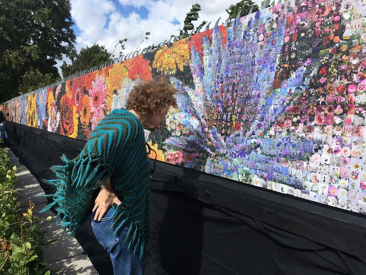
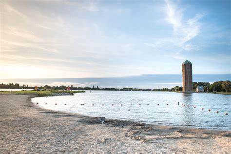

Aalsmeer
- Bloemenstad
- Haarlemmermeer
- Bloemenveiling
- Het Flower Art Museum
- De Watertoren
Flower Art Museum
Het Flower Art Museum organiseert tentoonstellingen met gerenommeerde kunstenaars en uitdagende thema’s, waarin de verbeelding van bloemen en planten in de hedendaagse kunst centraal staat. Het Flower Art Museum organiseert tentoonstellingen met gerenommeerde kunstenaars en uitdagende thema’s, waarin de verbeelding van bloemen en planten in de hedendaagse kunst centraal staat.
De Watertoren
Aan de Westeinderplassen ligt een van de mooiste watertorens van Nederland. Een architectonisch hoogtepunt, dat je letterlijk en figuurlijk niet kunt missen. Bezoekers kunnen de aparte binnenwereld van deze blikvanger bewonderen én op gezette tijden genieten van een grandioos uitzicht. Bij helder weer zie je vanaf de Watertoren Aalsmeer zelfs de Dom van Utrecht en de haven van IJmuiden. Aan de Westeinderplassen ligt een van de mooiste watertorens van Nederland. Een architectonisch hoogtepunt, dat je letterlijk en figuurlijk niet kunt missen. Bezoekers kunnen de aparte binnenwereld van deze blikvanger bewonderen én op gezette tijden genieten van een grandioos uitzicht. Bij helder weer zie je vanaf de Watertoren Aalsmeer zelfs de Dom van Utrecht en de haven van IJmuiden.